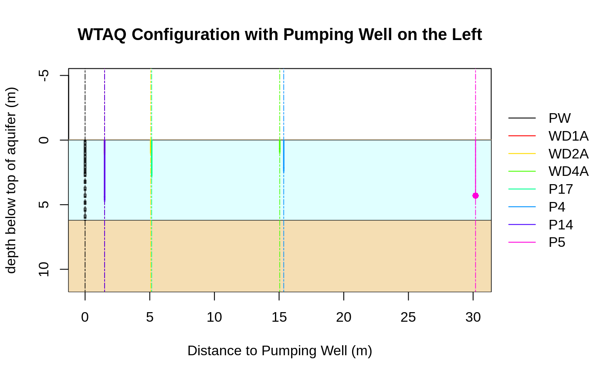

wtConfigurationExample3.RdWTAQ configuration corresponding to sample problem 3 of WTAQ distribution
wtConfigurationExample3()list with elements general, aquifer, drainage, times, solution, pumpwell, obswells, representing a full WTAQ configuration.
# Get configuration of sample problem 3 of WTAQ distribution
cnf <- wtConfigurationExample3()
#> Warning: xll was set to 0 since idpr is 0 (No delayed response)
#> Warning: rp was set to 0 since idpr is 0 (No delayed response)
# Print formatted output of configuration
print(cnf)
#> General
#> - Title: Sample problem 3, with Borden site conditions (minutes, meters).
#> - Format: DIMENSIONAL
#>
#> Aquifer
#> - Type: WATER TABLE
#> - Thickness (bb) ............: 6.200000 (length)
#> - Horiz. hydr. conduct. (hkr): 0.004100 (length/time)
#> - Vert. hydr. conduct. (hkz): 0.001740 (length/time)
#> - Specific storage (ss) .....: 0.000038 (1/length)
#> - Specific yield (sy) .......: 0.250000
#>
#> Drainage
#> - Type: Drainage with unsaturated-zone characterization (idra = 2)
#> - Soil-moisture retention exponent (acc) .................: 5.00 (1/length)
#> - Relative hydraulic-conduct. exponent (akk) .............: 31.70 (1/length)
#> - Initial unsat.-zone thickn. above capillary fringe (amm): 100.00 (length)
#> - Unsat.-zone thickn. above capillary fringe (axmm) ......: 100.00 (length)
#>
#> Times
#> - Type: User-specified times (its = 1)
#>
#> Solution
#> - Type: de Hoog algorithm (isoln = 2)
#> - Rel. err. for Newton-Raphson iter. (rerrnr) ...................: 0.000000
#> - Rel. err. sought for accur. of the num. invers. (error) .......: 0.000100
#> - Factor to determ. # terms in finite summations (ntms) .........: 30
#> - # terms in summ. of Fourier series for inv. Lapl. transf. (nnn): 6
#> - Method used to accelerate convergence of Fourier series .......: 3
#>
#> Pumped Well ("PW")
#> - Type: Partially penetrating pumped well (ipws = 0)
#> - Type of diameter: Finite diameter (ipwd = 1)
#> - Pumping rate (qq) .......................................: 0.040000 (length^3/time)
#> - Radius of screen (rw) ...................................: 0.065000 (length)
#> - Inside radius where levels change during pumping (rc) ...: 0.065000 (length)
#> - Top of aquifer/initial water table to screen top (zpd) ..: 2.550000 (length)
#> - Top of aquifer/initial water table to screen bottom (zpl): 6.200000 (length)
#> - Well-bore skin parameter (sw) ...........................: 1.740000
#> - Predefined Times (t):
#> t
#> 1 0.0373
#> 2 0.0747
#> 3 0.1120
#> 4 0.1493
#> 5 0.2240
#> 6 0.3360
#> 7 0.4853
#> 8 0.6720
#> 9 1.0065
#> 10 1.5270
#> 11 2.2273
#> 12 3.2755
#> 13 4.8443
#> 14 6.7958
#> 15 10.1120
#> 16 15.0737
#> 17 22.4978
#> 18 31.7328
#> 19 47.4245
#> 20 66.9433
#> 21 100.1085
#> 22 149.7313
#> 23 223.9793
#> 24 316.3345
#> 25 473.2577
#> 26 668.4498
#> 27 1000.1053
#> 28 1496.3410
#> 29 2238.8263
#> 30 3162.3827
#> 31 4697.0700
#> 32 6857.0700
#> 33 10457.0700
#>
#> Observation Well "WD1A"
#> - Type: Observation piezometer (iows = 2)
#> - Delayed response: yes (idpr = 1)
#> - Radial dist. from axis of pumped well to obs. well (r) .....: 1.510000 (length)
#> - Top of aquifer/initial water table to piezometer center (zp): 0.940000 (length)
#> - Inside radius of standpipe where levels change (rp) ........: 0.025000 (length)
#> - Length of screened interval (xll) ..........................: 0.350000 (length)
#> - Predefined Times (t):
#> t
#> 1 0.3360
#> 2 0.4853
#> 3 0.6720
#> 4 1.0065
#> 5 1.5270
#> 6 2.2273
#> 7 3.2755
#> 8 4.8443
#> 9 6.7958
#> 10 10.1120
#> 11 15.0737
#> 12 22.4978
#> 13 31.7328
#> 14 47.4245
#> 15 66.9433
#> 16 100.1085
#> 17 149.7313
#> 18 223.9793
#> 19 316.3345
#> 20 473.2577
#> 21 668.4498
#> 22 1000.1053
#> 23 1496.3410
#> 24 2238.8263
#> 25 3162.3827
#> 26 4697.0700
#> 27 6857.0700
#> 28 10457.0700
#>
#> Observation Well "WD2A"
#> - Type: Observation piezometer (iows = 2)
#> - Delayed response: yes (idpr = 1)
#> - Radial dist. from axis of pumped well to obs. well (r) .....: 5.070000 (length)
#> - Top of aquifer/initial water table to piezometer center (zp): 0.890000 (length)
#> - Inside radius of standpipe where levels change (rp) ........: 0.025000 (length)
#> - Length of screened interval (xll) ..........................: 0.350000 (length)
#> - Predefined Times (t):
#> t
#> 1 0.2240
#> 2 0.3360
#> 3 0.4853
#> 4 0.6720
#> 5 1.0065
#> 6 1.5270
#> 7 2.2273
#> 8 3.2755
#> 9 4.8443
#> 10 6.7958
#> 11 10.1120
#> 12 15.0737
#> 13 22.4978
#> 14 31.7328
#> 15 47.4245
#> 16 66.9433
#> 17 100.1085
#> 18 149.7313
#> 19 223.9793
#> 20 316.3345
#> 21 473.2577
#> 22 668.4498
#> 23 1000.1053
#> 24 1496.3410
#> 25 2238.8263
#> 26 3162.3827
#> 27 4697.0700
#> 28 6857.0700
#> 29 10457.0700
#>
#> Observation Well "WD4A"
#> - Type: Observation piezometer (iows = 2)
#> - Delayed response: yes (idpr = 1)
#> - Radial dist. from axis of pumped well to obs. well (r) .....: 15.050000 (length)
#> - Top of aquifer/initial water table to piezometer center (zp): 0.840000 (length)
#> - Inside radius of standpipe where levels change (rp) ........: 0.025000 (length)
#> - Length of screened interval (xll) ..........................: 0.350000 (length)
#> - Predefined Times (t):
#> t
#> 1 0.4875
#> 2 0.6750
#> 3 1.0252
#> 4 1.4930
#> 5 2.1933
#> 6 3.2415
#> 7 4.8103
#> 8 6.7618
#> 9 10.0780
#> 10 15.0397
#> 11 22.4638
#> 12 31.6988
#> 13 47.3905
#> 14 66.9093
#> 15 100.0745
#> 16 149.6973
#> 17 223.9453
#> 18 316.3005
#> 19 473.2237
#> 20 668.4158
#> 21 1000.0713
#> 22 1496.3070
#> 23 2238.7923
#> 24 3162.3487
#> 25 4697.0360
#> 26 6857.0360
#> 27 10457.0360
#>
#> Observation Well "P17"
#> - Type: Observation piezometer (iows = 2)
#> - Delayed response: yes (idpr = 1)
#> - Radial dist. from axis of pumped well to obs. well (r) .....: 5.150000 (length)
#> - Top of aquifer/initial water table to piezometer center (zp): 2.690000 (length)
#> - Inside radius of standpipe where levels change (rp) ........: 0.025000 (length)
#> - Length of screened interval (xll) ..........................: 0.350000 (length)
#> - Predefined Times (t):
#> t
#> 1 0.0375
#> 2 0.0750
#> 3 0.1125
#> 4 0.1500
#> 5 0.2250
#> 6 0.3375
#> 7 0.4875
#> 8 0.6750
#> 9 1.0252
#> 10 1.4930
#> 11 2.1933
#> 12 3.2415
#> 13 4.8103
#> 14 6.7618
#> 15 10.0780
#> 16 15.0397
#> 17 22.4638
#> 18 31.6988
#> 19 47.3905
#> 20 66.9093
#> 21 100.0745
#> 22 149.6973
#> 23 223.9453
#> 24 316.3005
#> 25 473.2237
#> 26 668.4158
#> 27 1000.0713
#> 28 1496.3070
#> 29 2238.7923
#> 30 3162.3487
#> 31 4697.0360
#> 32 6857.0360
#> 33 10457.0360
#>
#> Observation Well "P4"
#> - Type: Observation piezometer (iows = 2)
#> - Delayed response: yes (idpr = 1)
#> - Radial dist. from axis of pumped well to obs. well (r) .....: 15.360000 (length)
#> - Top of aquifer/initial water table to piezometer center (zp): 2.320000 (length)
#> - Inside radius of standpipe where levels change (rp) ........: 0.017500 (length)
#> - Length of screened interval (xll) ..........................: 0.350000 (length)
#> - Predefined Times (t):
#> t
#> 1 0.6750
#> 2 1.0252
#> 3 1.4930
#> 4 2.1933
#> 5 3.2415
#> 6 4.8103
#> 7 6.7618
#> 8 10.0780
#> 9 15.0397
#> 10 22.4638
#> 11 31.6988
#> 12 47.3905
#> 13 66.9093
#> 14 100.0745
#> 15 149.6973
#> 16 223.9453
#> 17 316.3005
#> 18 473.2237
#> 19 668.4158
#> 20 1000.0713
#> 21 1496.3070
#> 22 2238.7923
#> 23 3162.3487
#> 24 4697.0360
#> 25 6857.0360
#> 26 10457.0360
#>
#> Observation Well "P14"
#> - Type: Observation piezometer (iows = 2)
#> - Delayed response: yes (idpr = 1)
#> - Radial dist. from axis of pumped well to obs. well (r) .....: 1.510000 (length)
#> - Top of aquifer/initial water table to piezometer center (zp): 4.570000 (length)
#> - Inside radius of standpipe where levels change (rp) ........: 0.025000 (length)
#> - Length of screened interval (xll) ..........................: 0.350000 (length)
#> - Predefined Times (t):
#> t
#> 1 0.1493
#> 2 0.2240
#> 3 0.3360
#> 4 0.4853
#> 5 0.6720
#> 6 1.0065
#> 7 1.5270
#> 8 2.2273
#> 9 3.2755
#> 10 4.8443
#> 11 6.7958
#> 12 10.1120
#> 13 15.0737
#> 14 22.4978
#> 15 31.7328
#> 16 47.4245
#> 17 66.9433
#> 18 100.1085
#> 19 149.7313
#> 20 223.9793
#> 21 316.3345
#> 22 473.2577
#> 23 668.4498
#> 24 1000.1053
#> 25 1496.3410
#> 26 2238.8263
#> 27 3162.3827
#> 28 4697.0700
#> 29 6857.0700
#> 30 10457.0700
#>
#> Observation Well "P5"
#> - Type: Observation piezometer (iows = 2)
#> - Delayed response: no (idpr = 0)
#> - Radial dist. from axis of pumped well to obs. well (r) .....: 30.190000 (length)
#> - Top of aquifer/initial water table to piezometer center (zp): 4.300000 (length)
#> - Inside radius of standpipe where levels change (rp) ........: 0.000000 (length)
#> - Length of screened interval (xll) ..........................: 0.000000 (length)
#> - Predefined Times (t):
#> t
#> 1 480
#> 2 1080
#> 3 1950
#> 4 3420
#> 5 4920
#> 6 6750
#> 7 10530
# Plot wellfield profile of configuration
wtPlotConfiguration(cnf)
